소음진동기사(구) (2003-05-25 기출문제)
1과목: 소음진동개론
1. 총합 투과율이 0.035인 벽체의 총합 투과손실은?
- 29.1[dB]
- 14.6[dB]
- 7.3[dB]
- 1.5[dB]
(정답률: 알수없음)

2. 암소음이 높은 환경에서 대화를 할 때는 신경을 많이 써서 상대방의 의사를 파악해야 하기때문에 매우 피곤하게 된다. 따라서 이러한 회화방해를 방지하기 위하여 우선 회화방해 레벨을 정하였다. 이것은 다음에 열거한 중심주파수 대역의 소음을 산술 평균한 값을 말한다. 이 중에서 해당되지 않는 주파수는?
- 250Hz
- 500Hz
- 1000Hz
- 2000Hz
(정답률: 알수없음)
3. 진동수에 따른 등청감곡선은 수직진동은 ( ㉠ )Hz 범위에서 수평진동은 ( ㉡ )Hz범위에서 가장 민감하다고 할 때 ㉠, ㉡에 들어갈 적당한 범위는?
- 1-2, 2-4
- 1-2, 4-8
- 4-8, 1-2
- 4-8, 2-4
(정답률: 알수없음)
4. 다음 중 초음파 발생원과 가장 거리가 먼 것은?
- 냉∙난방시스템
- 제트엔진
- 고속드릴
- 세척장비
(정답률: 알수없음)
5. NITTS에 대한 다음 설명 중 알맞는 것은?
- 음향외상에 따른 재해와 연관이 있다.
- NIPTS와 동일한 변위를 공유한다.
- 조용한 곳에서 적정시간이 지나면 정상이 될 수 있는 변위를 말한다.
- 청감역치가 영구적으로 변화하여 영구적인 난청을 유발하는 변위를 말한다.
(정답률: 알수없음)
6. 청감보정곡선에 대한 다음 설명 중 옳지 않은 것은?
- A - 청감보정곡선은 저음압레벨에 대한 청감응답이다.
- B - 청감보정곡선은 중음압레벨에 대한 청감응답이다.
- C - 청감보정곡선은 주파수변화에 따라 크게 변하지 않는다.
- D - 청감보정곡선은 철도소음에 대한 청감응답으로 권장된다.
(정답률: 알수없음)
7. 원음장중 역2승법칙이 만족되는 음장은?
- 확산음장
- 자유음장
- 직접음장
- 잔향음장
(정답률: 알수없음)
8. 음의 크기에 관한 설명으로 알맞지 않는 것은?
- 음의 크기레벨은 "폰(phons)"으로 측정된다.
- 1sone은 4000Hz 음의 음압레벨 40dB로 정의된다.
- 음의 크기(S)=2(Phon-40)/10[sones]
- 40phons 은 1sone과 같은 음의 크기이다.
(정답률: 알수없음)
9. 횡파에 관한 설명으로 틀린 것은?
- 파동의 진행방향과 매질의 진동방향이 서로 평행하다.
- 매질이 없어도 전파된다.
- 지진파의 S파, 수면파(물결파)가 횡파에 속한다.
- 횡파는 고정파와 같은 의미이다.
(정답률: 알수없음)
10. 용수철하단에 질량 50kg인 물체가 달려 있을 때 이계의 고유진동수는? (단, k=200N/m)
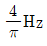
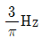
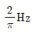
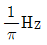
(정답률: 알수없음)
11. 반자유 공간에 어떤 기계의 음향 Power를 측정하기 위해 서 기계를 중심으로 한 반경 1m의 가상적인 반구면 위의 몇개 위치에서 음압도를 측정한 결과 평균 80dB로 나타났다. 이 기계의 음향 Power는?
- 3.14 × 10-3 watt
- 6.31 × 10-3 watt
- 3.14 × 10-4 watt
- 6.31 × 10-4 watt
(정답률: 알수없음)
12. 상온 대기중에서 어느 음원에서 음의 강도가 10-8[W/m2]의 세기로 배출되는 소음이 있다. 이의 음압과 음압 level은 얼마인가? (순서대로 음압, 음압level)
- 2×10-3[N/m2], 40[dB]
- 3×10-3[N/m2], 42[dB]
- 2×10-4[N/m2], 40[dB]
- 3×10-4[N/m2], 42[dB]
(정답률: 알수없음)
13. 50phon의 소리는 40phon의 소리에 비해 몇배로 크게 들리는가?
- 1
- 2
- 3
- 5
(정답률: 알수없음)
14. 소음원의 음향파워레벨을 측정하는 방법에 대한 이론식 중 잘못 표기하고 있는 것은? (단, PWL은 음향파워레벨, SPL은 반경 r내에서의 평균 음압레벨, R은 실정수, Q는 지향계수)
- 확산음장법:PWL = SPL + 20logR - 6
- 자유음장법(자유공간):PWL = SPL + 20 logr +11
- 자유음장법(반자유공간):PWL = SPL + 20 logr +8
- 반확산음장법:PWL = SPL - 10log[(Q/4π r2)+(4/R)]
(정답률: 알수없음)
15. 15℃공기 중에서 약 500㎐의 음의 파장은 약 몇㎝ 인가?
- 50
- 60
- 70
- 80
(정답률: 알수없음)
16. 날개수 4개의 프로펠러형 송풍기가 1,800rpm 으로 운전될 때 발생하는 소음의 기본음 주파수는?
- 120㎐
- 180㎐
- 450㎐
- 720㎐
(정답률: 알수없음)
17. 다음 소음중 소음 발생의 유형(원인)이 다른 것은?
- 엔진의 배기음
- 압축기의 배기음
- 베어링 마찰음
- 관의 굴곡부 발생음
(정답률: 알수없음)
18. 항공기 소음의 평가방법 또는 평가치로 사용되지 않는 것은?
- NNI
- EPNL
- NEF
- TNI
(정답률: 알수없음)
19. 출력 1.0W 의 작은 음원이 단단하고 평판한 지상에 있을 경우 음원으로 부터 2m 떨어진 곳에서의 음의 세기 (W/m2)는?
- 0.02
- 0.03
- 0.04
- 0.⑤
(정답률: 알수없음)
20. 다음중 진동의 역치라 할 수 있는 것은?
- 25 ± 5dB
- 35 ± 5dB
- 45 ± 5dB
- 55 ± 5dB
(정답률: 알수없음)
2과목: 소음방지기술
21. 단일벽 차음특성(투과손실)을 주파수에 따라 나눈 영역에 속하지 않는 것은?
- 강성제어역
- 공진효과역
- 질량제어역
- 일치효과역
(정답률: 알수없음)
22. 어떤 흡음재의 옥타브 밴드별 흡음률이 다음과 같을 경우 감음계수(NRC, Noise reduction coefficient)는?
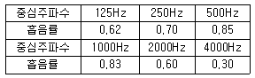
- 0.45
- 0.55
- 0.65
- 0.75
(정답률: 알수없음)
23. 어떤 창문의 규격이 5m(L) × 3m(H)이고 창문 안쪽에서의 음압레벨 SPL이 75dB이다. 창문 면적의 1/5을 열었을 경우 창문 외측에서의 음압레벨은 몇 dB인가? (단, 창문이외의 다른 틈새나 벽체에 의한 영향은 무시)
- 62 dB
- 65 dB
- 68 dB
- 71 dB
(정답률: 알수없음)
24. 소음기에 관한 다음 설명중 옳지 않은 것은?
- 흡음닥트형 소음기는 흡음재료로 유리솜이나 암면 등을 사용하며,저· 중음역의 감쇠효과를 얻을 수 있다.
- 팽창형 소음기는 단면 불연속부의 음에너지 반사에 의해 감음하는 구조로 저· 중음역에 유효하며 팽창부에 흡음재를 부착하면 고음역의 감음량도 증가한다.
- 간섭형 소음기는 음의 통로 구간을 둘로 나누어 각각의 경로차가 반파장(π/2)에 가깝게 하는 구조이다.
- 공동공명기형 소음기는 헬름홀즈 공명원리를 응용한 것으로 협대역 저주파 소음방지에 효과가 크다.
(정답률: 알수없음)
25. 다음은 수음점과 음원 사이의 울타리에 의한 감쇠효과를 나타낸 것이다. 옳은 것은?
- 수음점과 음원의 중앙에 세울 때 가장 효과가 크다.
- 울타리의 위치와는 무관하다.
- 음원이나 수음점 가까이 세울수록 효과가 크다.
- 일반적으로 주파수가 낮을 수록 효과가 크다.
(정답률: 알수없음)
26. 동력엔진의 배기소음 성분중에서 250Hz가 가장 심각한 소음원임을 알았다. 단순팽창형 소음기로 소음설계하고자 할 때 소음기의 길이는 얼마가 적당하겠는가? (단, 음속은 343m/s로 가정, 최대투과손실치 기준 )
- 34cm 정도
- 46cm 정도
- 52cm 정도
- 67cm 정도
(정답률: 알수없음)
27. 어떤 벽체의 두께를 10cm로 했을 때 면밀도가 25kg/m2이다. 500Hz에서 두께 10cm의 벽 2개 사이에 충분한 공간을 두었을 때의 투과손실은? (단, 질량법칙을 적용한다)
- 약 63.4dB
- 약 59.4dB
- 약 42.4dB
- 약 36.4dB
(정답률: 알수없음)
28. 파장에 비해 작은 밀폐상자의 저주파 음압레벨 SPL1을 구는 공식은? (단, PWLS=음원의 파워레벨(dB), f=밀폐상자보다 파장이 큰 저주파(Hz), V=음원과 상자간의 공간체적(m3))
- SPL1 = PWLS - 20Log f - 20Log V + 81 dB
- SPL1 = PWLS + 20Log f - 20Log V + 81 dB
- SPL1 = PWLS - 40Log f - 20Log V + 81 dB
- SPL1 = PWLS + 40Log f - 20Log V + 81 dB
(정답률: 알수없음)
29. 집회장, 공연장, 공개홀, 공장건물내 등 실내벽면에 흡음 대책을 세워 감음을 하고자 할 때 실내흠음 대책에 의해 기대할 수 있는 경제적인 감음량의 한계는?
- 5∼10dB 정도
- 15∼20dB 정도
- 25∼30dB 정도
- 35∼40dB 정도
(정답률: 알수없음)
30. 4mL × 5mW × 3mH 인 방에서 측정한 잔향시간이 500Hz에서 0.25초 일 때, 이방의 평균 흡음율은?
- 0.3
- 0.4
- 0.5
- 0.6
(정답률: 알수없음)
31. 실정수가 114(m2)인 방에 파워레벨이 100dB인 음원이 있을때 실내(확산음장)의 평균음압레벨(dB)은? (단, 실내의 전체 내면의 반사율이 아주 큰 잔향실 기준)
- 70 dB
- 75 dB
- 80 dB
- 85 dB
(정답률: 알수없음)
32. 총합투과손실이 32dB인 벽의 투과율은?
- 6.3x10-4
- 6.6x10-3
- 6.7x10-5
- 6.8x10-4
(정답률: 알수없음)
33. 가로× 세로× 높이가 15m× 20m× 3m인 교실에서 잔향시간을 측정하였더니 2sec였다. 이 교실의 실정수는?
- 60m2
- 70m2
- 80m2
- 90m2
(정답률: 알수없음)
34. 공장주변 부지경계선에서 소음을 주파수 분석결과에 관련 수치를 보정하고 각 대역마다 소음필요량을 구했다. 일반적으로 방음설계를 할 경우 소음필요량에 가하는 안전율은 몇dB 정도인가?
- 3dB
- 5dB
- 10dB
- 15dB
(정답률: 알수없음)
35. 산업용 연소기에 길이 4m 정도의 배기관이 부착되어 있다이 배기관을 통하여 온도 60℃의 배기 가스가 배출된다고 할 때 배기관에서의 공명주파수는? (단, 배기관은 '양단개구관' 진동체이다 )
- 33Hz
- 46Hz
- 52Hz
- 63Hz
(정답률: 알수없음)
36. 흡음재료에 다공판을 피복하여 공명흡음형식으로 사용하고자 할 때 다공판의 개공율은 얼마가 좋은가?
- 58∼63 %
- 42∼58 %
- 20∼42 %
- 3∼20 %
(정답률: 알수없음)
37. 공장의 일부를 벽(Wall)으로 차단하여 사무실로 쓰고자 한다. 벽은 투과손실 51dB인 벽돌(brick)과 투과손실 18dB인 유리문(glass door)으로 만들려 하며 벽의 전체면적은 10m2이고, 이 중에서 2m2은 유리문의 면적이라면 벽의 총합투과손실은 몇 dB인가?
- 38
- 32
- 29
- 25
(정답률: 알수없음)
38. 반무한 방음벽의 직접음 회절감쇠치가 15dB(A), 반사음 회절감쇠치가 18dB(A)이고 , 투과손실치가 20dB(A) 일 때이 벽에 의한 삽입 손실치는 몇 dB(A) 인가?
- 6.8 dB(A)
- 12.4 dB(A)
- 18.6 dB(A)
- 22.9 dB(A)
(정답률: 알수없음)
39. 실내의 평균흡음율을 구하는 방법과 가장 거리가 먼 것은?
- 잔향시간 측정에 의한 방법
- 표준음원(파워레벨을 알고 있는 음원)에 의한 방법
- 질량법칙에 의한 방법
- 재료별 면적과 흡음율 계산에 의한 방법
(정답률: 알수없음)
40. '송풍기'에 대한 소음방지대책과 가장 거리가 먼 것은?
- 기초방진 구조
- 방음 lagging
- 내측 흡음처리
- 소음기 부착
(정답률: 알수없음)
3과목: 소음진동 공정시험 기준
41. 진동신호를 전기신호로 바꾸어 주는 장치는?
- 진동픽업(pick-up)
- 레벨렌지변환기
- 증폭기
- 동특성조절기
(정답률: 알수없음)
42. 고속도로 또는 자동차 전용도로의 도로변지역의 범위로 가장 알맞는 것은?
- 도로단으로 부터 차선수×10m 이내의 지역
- 도로단으로 부터 차선수×50m 이내의 지역
- 도로단으로 부터 100m 이내의 지역
- 도로단으로 부터 150m 이내의 지역
(정답률: 알수없음)
43. 발파소음 측정지점수는 밤시간대 및 낮시간대의 각 시간 대중에서 최대발파소음이 예상되는 몇 지점 이상을 택하여야 하는가? (단, 소음진동공정시험방법상의 기준 적용 )
- 1지점 이상
- 2지점 이상
- 3지점 이상
- 5지점 이상
(정답률: 알수없음)
44. 배출허용기준 적용을 위해 측정하는 소음을 디지탈 소음자동 분석계를 사용하여 측정할 경우 측정시간 기준은?
- 1분 이상
- 3분 이상
- 5분 이상
- 10분 이상
(정답률: 알수없음)
45. 소음도 범위별 빈도율이 아래와 같을 때 등가소음도는?
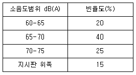
- 66.9 dB(A)
- 68.4 dB(A)
- 70.5 dB(A)
- 72.8 dB(A)
(정답률: 알수없음)
46. 소음의 환경기준 측정시 밤시간대에 각 측정지점에서 몇시간 이상 간격으로 몇회 이상 측정해야 하는가?
- 4시간-2회
- 4시간-4회
- 2시간-2회
- 2시간-4회
(정답률: 알수없음)
47. 측정소음도에 암소음을 보정한 후 얻어진 소음도는?
- 대상소음도
- 평가소음도
- 등가소음도
- 보정소음도
(정답률: 알수없음)
48. 소음계에서 음압도를 소음도로 변환시키는 장치는 다음 중 어느 것인가?
- 마이크로폰
- 레벨렌지 변환기
- 청감보정회로
- 교정장치
(정답률: 알수없음)
49. 발파진동 측정의 설명이 잘못된 것은?
- 진동레벨계만으로 측정할 경우에는 최고 진동레벨이 고정되는 것에 한한다.
- 진동픽업은 지표면에 일직선으로 설치한다.
- 동특성은 원칙적으로 느림을 사용하여 측정한다.
- 감각보정 회로는 별도규정이 없는 한 수직특성에 고정하여 측정한다.
(정답률: 알수없음)
50. 항공기 소음의 측정시 설명이 적절한 것은?
- 상시측정용 측정점은 지면에서 1.2-1.5m 높이로 한다.
- 측정지점 반경 3.5m 이내는 가급적 평활하고 시멘트 등으로 포장되어 있어야 한다.
- 항공기소음은 넓은 범위에 영향을 미치기 때문에 가급적 측정지점은 인적없는 한적한 곳이어야 한다.
- 측정위치를 정점으로 한 원추형 상부공간이란 지면 또는 바닥면의 법선에 반각 45° 선분이 지나는 공간을 말한다.
(정답률: 알수없음)
51. 열차통과시마다 최고진동레벨이 암진동레벨보다 최소 ( )이상 큰 것에 한하여 연속 10개 열차(상하행포함)이상을 대상으로 최고 진동레벨을 측정 기록하고 그중 중앙값이상을 산술평균한 값을 철도진동레벨로 한다. ( )안에 알맞는 것은?
- 3dB(V)
- 5dB(V)
- 10dB(V)
- 15dB(V)
(정답률: 알수없음)
52. 어느 공장의 측정소음도가 70㏈(A)이고 암소음도가 60㏈(A) 였다면 공장의 대상소음도는?
- 70 ㏈(A)
- 69 ㏈(A)
- 68 ㏈(A)
- 67 ㏈(A)
(정답률: 알수없음)
53. 소음진동공정시험방법상 자동차 소음측정에 사용되는 소음계의 소음도 범위기준으로 가장 적절한 것은?
- 60dB - 120dB 이상
- 55dB - 130dB 이상
- 50dB - 120dB 이상
- 45dB - 130dB 이상
(정답률: 알수없음)
54. 진동측정기 성능에 관한 설명으로 알맞지 않는 것은?
- 측정가능 주파수는 1-90Hz 이상이어야 한다.
- 측정가능 진동레벨 범위는 45-120dB 이상이어야 한다.
- 진동픽업의 횡감도는 규정주파수에서 수감축감도에 대한 차이가 10dB 이상이어야 한다.
- 레벨렌지 변환기가 있는 기기에 있어서 레벨렌지 변환기의 전환오차는 0.5dB 이내이어야 한다.
(정답률: 알수없음)
55. 소음 측정기의 지시계기에 관한 내용 중 틀린 것은?
- 지침형 또는 숫자표시형이어야 한다.
- 지침형에서는 유효지시 범위는 15dB 이상이어야 한다.
- 지침형의 각각의 눈금은 0.1dB 이하를 판독할 수 있어야 한다.
- 숫자표시형에서 숫자는 소수점 한자리까지 표시 되어야 한다.
(정답률: 알수없음)
56. 소음계의 교정장치는 몇 dB(A)이상이 되는 소음환경에서 도 기계자체의 교정이 가능하여야 하는가?
- 70 dB(A)
- 80 dB(A)
- 90 dB(A)
- 100 dB(A)
(정답률: 알수없음)
57. 소음배출 시설이 설치된 공장의 부지경계선에서 측정한 기록지상의 지시치의 변동폭이 5dB(A)이내인 경우 측정 소음도 결정을 위한 자료분석 방법으로 옳은 것은?
- 구간내 최대치
- 구간내 최대치 10개의 산술평균치
- 구간내 측정치의 산술평균치
- 구간내 측정치의 기하평균치
(정답률: 알수없음)
58. 배출허용기준을 적용하기 위해 소음을 측정할 때 측정점에 담, 건물등 장애물이 있을 때는 장애물로 부터 소음원 방향으로 1-3.5m 떨어진 지점에서 소음을 측정하게 되어있다. 장애물의 높이가 몇 m 를 초과할 때 인가?
- 1.2
- 1.5
- 2.0
- 2.5
(정답률: 알수없음)
59. 진동레벨계의 측정감도를 교정하는 기기인 표준진동 발생기의 오차범위로 옳은 것은?
- ± 0.1dB 이내
- ± 0.5dB 이내
- ± 1dB 이내
- ± 1.5dB 이내
(정답률: 알수없음)
60. 생활 소음 측정 소음도 기준은?
- 3지점 이상의 측정치 중 가장 높은 소음도
- 3지점 이상의 측정치를 산술 평균한 소음도
- 2지점 이상의 측정치 중 가장 높은 소음도
- 2지점 이상의 측정치를 산술 평균한 소음도
(정답률: 알수없음)
4과목: 진동방지기술
61. 그림에 보인 스프링 질량계의 경우에 등가스프링 상수는?
- k1 + k2
- k1 k2
- (k1 + k2)/k1 k2
- k1 k2/(k1 + k2)
(정답률: 알수없음)
62. 인체에 대한 진동의 영향을 결정하는 물리적 인자의 조합에 대한 아래의 기술(記述)중 가장 정확한 것은?
- 주파수 - 진동가속도 - 진동방향 - 지속시간(폭로시간)
- 주파수 - 진동가속도 - 진동원으로 부터의 거리 - 진동방향
- 주파수 - 진동가속도 - 1일간의 폭로회수 - 변동성
- 주파수 - 진동가속도 - 진동원으로 부터의 거리 - 변동성
(정답률: 알수없음)
63. 지표면에서 측정한 합성파의 종류중 공해진동문제의 주를 이루고 있는 것을 가장 알맞게 나타낸 것은?
- 레이리파와 횡파
- 레이리파와 종파
- 종파와 횡파
- 종파와 실체파
(정답률: 알수없음)
64. 단진자의 길이가 1/2로 되면 주기는 몇배로 되는가?
- 1/2
- 1/√2
- √2
- 2
(정답률: 알수없음)
65. 금속스프링의 단점을 보완하기 위한 방법이 아닌 것은?
- 정하중에 따른 스프링 수축량은 10-15%이내로 조절한다.
- 스프링 감쇠비가 적을 때는 스프링과 병렬로 damper를 넣는다.
- Rocking motion을 억제하기 위해서는 스프링의 정적 수축량이 일정한 것을 쓴다.
- 낮은 감쇠비로 일어나는 고주파진동은 스프링과 직렬로 고무패드를 끼워 차단할 수 있다.
(정답률: 알수없음)
66. 스프링상수 k 가 100kg/㎝인 스프링으로 100kg의 무게를 지지 하였다고 하면 고유 진동수는 몇 Hz 인가?
- 1
- 3
- 5
- 7
(정답률: 알수없음)
67. 감쇠비가 0.2인 감쇠자유진동에서 감쇠고유진동수는 비감쇠고유진동수의 몇 배인가?
- 0.98
- 1.25
- 1.52
- 2.32
(정답률: 알수없음)
68. 현장에서 계의 고유진동수를 간단히 알 수 있는 방법은, 질량 m 인 물체를 탄성지지체에 올려 놓았을 때 그 처짐량이 δ 라면, 어떤 식으로 계산이 되는가?
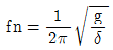
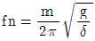
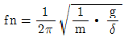
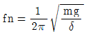
(정답률: 알수없음)
69. '서어징'에 관한 다음 기술중 맞는 것은?
- 코일스프링을 사용한 탄성 지지계에서는 스프링의 서어징과 공진시의 감쇠 증대가 문제된다.
- 서어징이라는 것은 코일스프링 자신의 탄성진동의 고유 진동수가 외력의 진동수와 공진하는 상태이다.
- 서어징은 방진고무에서 주로 많이 대두된다.
- 코일스프링이 서어징을 일으키면 탄성지지계의 진동 전달율이 현저히 저하한다.
(정답률: 알수없음)
70. 금속자체에 진동흡수능력을 갖는 제진합금 중에서 감쇠계수가 크고 우수한 제진합금에 속하는 것은?
- Cu-Al-Ni합금
- 청동
- 스테인레스강
- 0.8%탄소강
(정답률: 알수없음)
71. 임계감쇠(critical damping)이란 감쇠비(ζ)가 어떤 값을 가질 때인가?
- ζ = 1
- ζ ∞ 1
- ζ ≤ 1
- ζ = 0
(정답률: 알수없음)
72. 소음의 원인이 되는 진동을 감소시키기 위한 노력으로 부적당한 것은?
- 댐핑을 증가시킨다.
- 고유진동 주파수에 맞춘다.
- 주기적인 힘을 감소시킨다.
- 진동원으로부터 차단시킨다.
(정답률: 알수없음)
73. 점성감쇠 강제진동의 진폭이 최대가 되기 위해서 진동수의 비는 다음 어느식으로 표시되는가? (단, ξ = 감쇠비율이다.)
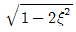
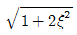
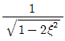
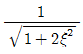
(정답률: 알수없음)
74. 중량 1500N인 기계를 탄성지지 시켜 30dB의 방진효과를 얻기 위한 진동전달율은?
- 0.3
- 0.03
- 0.1
- 0.01
(정답률: 알수없음)
75. 전달력이 항상 외력보다 작아 차진이 유효한 영역은? (단, f:강제각진동수, fn:고유각진동수)
- f/fn=1
- f/fn>√2
- f/fn=√2
- f/fn<√2
(정답률: 알수없음)
76. 각 진동수가 600rpm인 조화운동의 주기는 얼마인가?
- 0.1초
- 0.2초
- 0.5초
- 1초
(정답률: 알수없음)
77. 어떤 기관이 2400 rpm 에서 심한 진동을 발생시킨다. 이 진동을 방지하기 위해서 감쇠가 없는 동흡진기(動吸桭器)를 사용하고자한다. 이 흡진기의 무게를 50 Newton으로 할 때 사용해야 할 스프링의 강성은?
- 약 1200 N/㎝
- 약 1600 N/㎝
- 약 2400 N/㎝
- 약 3200 N/㎝
(정답률: 알수없음)
78. 계수 여진 진동에 관한 설명으로 틀린 것은?
- 대표적인 예는 그네로서 그네가 1행정하는 동안 사람 몸의 자세는 2행정을 하게 된다
- 회전하는 편평축의 진동, 왕복운동기계의 크랑크축계의 진동등이 계수여진진동이라 할 수 있다
- 가진력의 주파수가 계의 고유진동수와 같을 때 크게 진동하는 특징이 있다
- 진동의 근본적인 대책은 질량 및 스프링특성의 시간적 변동을 없애는 것이다
(정답률: 알수없음)
79. 감쇠비 ξ가 일정한 값을 갖고 전달율(TR)을 1 이하로 감소시키려면 진동수비 w/wn는 얼마의 크기를 나타 내어야 하는가?
- W/Wn=0
- 0＜W/W＜1
- 1＜w/wn＜ √2
- √2≦w/wn
(정답률: 알수없음)
80. 방진재로 사용되는 공기스프링의 단점이 아닌 것은?
- 구조가 복잡하고 시설비가 많다.
- 공기누출의 위험이 있다.
- 공진시에 전달율이 매우 크다.
- 사용진폭이 적은 것이 많으므로 별도의 damper를 필요로 하는 경우가 많다.
(정답률: 알수없음)
5과목: 소음진동 관계 법규
81. 경자동차의 경적소음(dB(C))허용기준으로 적절한 것은? (단, 2002년 1월1일이후에 제작되는 자동차 기준)
- 100이하
- 110이하
- 112이하
- 117이하
(정답률: 알수없음)
82. 전용 주거지역에서 도로변지역의 낮(06:00- 22:00)인 경우에 환경기준은?
- 55 LeqdB(A)
- 60 LeqdB(A)
- 65 LeqdB(A)
- 70 LeqdB(A)
(정답률: 알수없음)
83. 환경관리인이 교육을 받아야 하는 교육기관은?
- 환경공무원 교육원
- 국립환경연구원
- 지방환경청
- 환경보전협회
(정답률: 알수없음)
84. 운행차의 소음개선 명령기간은 개선명령일로부터 몇일로 하는가?
- 5일
- 7일
- 10일
- 14일
(정답률: 알수없음)
85. 환경개선에 크게 기여하는 사업장을 환경친화기업으로 지정할 수 있는 자는 누구인가?
- 산업자원부장관
- 지방환경청장
- 환경부장관
- 시·도지사
(정답률: 알수없음)
86. 운행차검사 대행자로 지정을 받고자 하는 자가 제출할 서류와 가장 거리가 먼 것은?
- 법인인 경우에는 법인등기부등본
- 개인인 경우에는 사업자등록증 사본
- 자동차검사소의 대지 및 건물에 대한 소유권
- 기술능력, 시설 및 장비 현황
(정답률: 알수없음)
87. 주거지역내에 있는 생활소음 규제기준(dB(A))은? (단, 소음원은 공장, 심야시간대 기준)
- 45 이하
- 50이하
- 55이하
- 60이하
(정답률: 알수없음)
88. 배출시설을 설치하고자 하는자는 대통령이 정하는 바에 의하여 누구에게 신고를 하여야 하는가?
- 국무총리
- 지방환경청장
- 시∙도지사
- 환경부장관
(정답률: 알수없음)
89. 과태료 처분에 불복이 있는 자는 그 처분의 고지를 받은 날로부터 몇일 이내에 환경부장관 또는 시· 도지사에게이의를 제기할 수 있는가?
- 10일
- 20일
- 30일
- 60일
(정답률: 알수없음)
90. 벌칙중 3년이하의징역 또는 1천 500만원 이하의 벌금에 해당하지 아니하는 자는?
- 제작차 소음허가기준에 적합하지 아니하게 자동차를 제작한 자
- 인증받지 아니하고 자동차를 제작한 자
- 사용금지 또는 폐쇄명령을 위반한 자
- 허가를 받지 아니하고 배출시설을 설치한 자
(정답률: 알수없음)
91. 소음진동규제법상 방지시설 설치면제 대상사업장은 당해 사업장의 부지경계선으로 부터 직선거리 몇 미터이내에 주택, 상가, 공장등이 없는 경우를 말하는가?
- 50m 이내
- 100m 이내
- 150m 이내
- 200m 이내
(정답률: 알수없음)
92. 운행자동차 소음허용 기준으로 정하고 있는 소음항목을 옳게 짝지어 놓은 것은?
- 주행소음, 가속주행소음, 배기소음
- 가속주행소음, 배기소음, 경적소음
- 주행소음, 배기소음, 경적소음
- 배기소음, 경적소음
(정답률: 알수없음)
93. 배출시설설치신고서에 첨부되어야 하는 서류인 것은?
- 배출시설의 설치내역서
- 배출시설의 배치도
- 방지시설의 설치내역서
- 방지시설의 도면
(정답률: 알수없음)
94. 환경부장관 및 시· 도지사가 측정망설치계획을 결정고시 한 때에는 다음의 허가를 받은 것으로 본다. 틀린 것은?
- 하천법에 의한 하천점용의 허가
- 도로법에 의한 도로점용의 허가
- 공유수면관리법에 의한 수변지역 매립의 허가
- 하천법에 의한 하천공사 시행의 허가
(정답률: 알수없음)
95. 소음배출시설 기준으로 적절치 못한 것은?
- 20마력이상의 초지기
- 20마력이상의 원심분리기
- 20마력이상의 제재기
- 20마력이상의 목재가공기계
(정답률: 알수없음)
96. 소음진동규제법상 소음방지시설과 가장 거리가 먼 것은?
- 소음기
- 방음터널시설
- 방음언덕
- 방음내피시설
(정답률: 알수없음)
97. 생활소음 규제기준에 명시된 시간별 범위가 알맞게 나타내어진 것은?
- 조석: ⑤:00-09:00, 18:00-23:00
- 조석: ⑤:00-08:00, 18:00-22:00
- 주간,심야: 09:00-18:00, 22:00-⑤:00
- 주간,심야: 08:00-18:00, 23:00-⑤:00
(정답률: 알수없음)
98. 전기를 주동력으로 사용하는 자동차에 대한 종류의 구분은 차량 총중량에 의하되, 차량 총중량이 ( )에 해당되는 경우에는 경자동차로 구분한다. ( )안에 알맞는 내용은? (단, 2000년 1월 1일부터 제작되는 자동차 기준)
- 3.0톤 미만
- 2.5톤 미만
- 2.0톤 미만
- 1.5톤 미만
(정답률: 알수없음)
99. 변경신고대상이 되는 경우와 가장 거리가 먼 것은?
- 배출시설의 규모를 100분의 30이상(신고 또는 변경 신고를 하거나 허가를 받은 규모를 증설하는 누계를 말한다)증설하는 경우
- 사업장의 명칭을 변경하는 경우
- 사업장의 소재지를 변경하는 경우
- 사업장의 대표자를 변경하는 경우
(정답률: 알수없음)
100. 공장에서 측정된 대상진동레벨 보정을 위한 보정표 항목 중 관련시간대에 대한 기준으로 적절한 것은?
- 낮은 8시간, 저녁은 6시간, 밤은 4시간으로 한다.
- 낮은 8시간, 저녁은 4시간, 밤은 2시간으로 한다.
- 낮은 8시간, 밤은 4시간으로 한다.
- 낮은 8시간, 밤은 3시간으로 한다.
(정답률: 알수없음)
총합 투과손실은 전체 파워 중 투과하지 못한 파워의 비율을 의미합니다. 따라서 총합 투과율이 0.035이면 총합 투과손실은 1-0.035=0.965입니다.
총합 투과손실은 dB로 표현할 수 있습니다. dB로 변환하려면 10log(총합 투과손실)을 계산하면 됩니다. 따라서 10log(0.965)≈-0.35[dB]입니다.
하지만 문제에서 원하는 답은 dB 단위로 반올림한 값이므로 -0.35[dB]를 반올림하여 -0.5[dB]로 계산합니다. 이 값을 2로 나누면 총합 투과손실이 됩니다. 따라서 -0.5[dB]/2=-0.25[dB]입니다.
그러나 보기에서는 1.5[dB]가 최소값이므로 이 값에 14.6[dB]를 더하면 16.1[dB]가 됩니다. 이 값은 2로 나누면 8.⑤[dB]가 되는데, 이 값은 보기에 없으므로 다시 14.6[dB]를 선택해야 합니다.
따라서 정답은 "14.6[dB]"입니다.